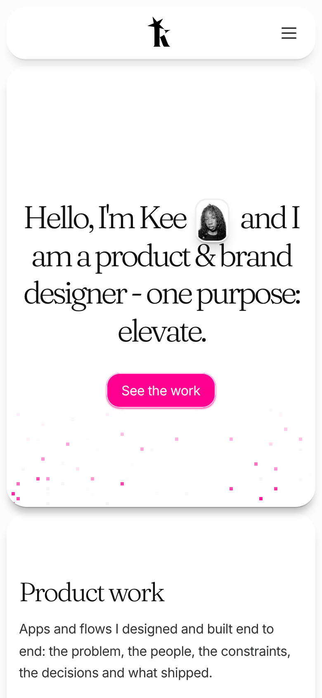

Kee · Kreeative
Portfolio · v2
Le portfolio v2 est en ligne.
Des études de cas écrites comme du design produit : le problème, pour qui, les contraintes, les décisions, le résultat.


Portfolio v2kreeative.xyz
Portfolio · v2
Des études de cas écrites comme du design produit : le problème, pour qui, les contraintes, les décisions, le résultat.
